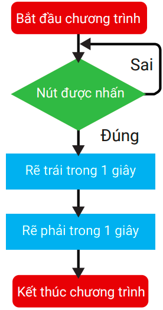
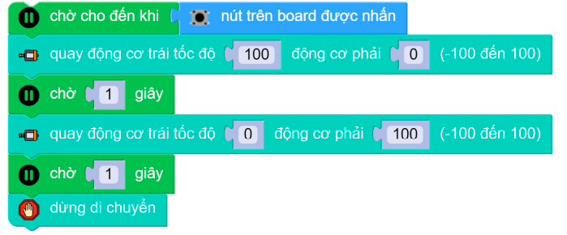

5. Bài 1: Cùng di chuyển nào
Mục tiêu:
Hiểu về động cơ và các khối lệnh giúp cho xBot có thể di chuyển theo ý muốn.
1. Giới thiệu về động cơ
Để điều khiển xBot di chuyển, bạn cần hiểu về động cơ và cách hoạt động của chúng.
Các động cơ này sẽ giúp cho xBot di chuyển tự do nhiều hướng (tiến tới, lùi lại, rẽ trái, rẽ phải) hoặc thực hiện một tác vụ phức tạp nào đó theo yêu cầu.
{kind=link}
Động cơ có trên xBot
{kind=link}
2. Khối kệnh điều khiển động cơ
Để điều khiển động cơ, bạn sẽ dùng các khối lệnh theo những cách sau:
Cách 1: Điều khiển 2 động cơ cùng lúc
{kind=link}
Bạn hãy thử đặt xBot xuống nền nhà và chạy thử lệnh trên xem robot di chuyển đúng không nhé.
Ngoài ra, bạn cũng có thể sử dụng khối lệnh di chuyển với thời gian vô hạn sau:

{kind=link}
Cách 2: Điều khiển từng động cơ riêng biệt
Bạn cũng có thể điều khiển từng động cơ riêng biệt để xBot di chuyển theo ý muốn.
{kind=link}
{kind=link}
{kind=link}
Mô tả
Tốc độ quay của mỗi động cơ có giá trị từ -100 đến 100.
◼ Tốc độ > 0: Động cơ quay thuận chiều, xBot đi tới.
◼ Tốc độ < 0: Động cơ quay ngược chiều, xBot lùi lại.
Giá trị tốc độ càng lớn thì động cơ quay càng nhanh.
3. Viết chương trình di chuyển
Chương trình 1: Ở trên xBot có một nút nhấn, khi nút được nhấn, xBot di chuyển về phía trước 1 giây và sau đó lùi lại 1 giây.
{kind=link}
Khối lệnh chương trình
{kind=link}
Sơ đồ hoạt động
{kind=link}
Chương trình 2: Khi nút được nhấn, xBot sẽ rẽ sang trái trong 1 giây và sau đó rẽ sang phải trong 1 giây.
Sơ đồ hoạt động
{kind=link}
Khối lệnh chương trình
{kind=link}
Chương trình 3: Khi nút được nhấn, chương trình hoạt động theo mô tả sau:
Quay động cơ trái trong vòng 1 giây (dừng động cơ phải)
Quay động cơ phải trong vòng 1 giây (dừng động cơ phải)
Dừng cả 2 động cơ
Sơ đồ hoạt động
{kind=link}
Khối lệnh chương trình
{kind=link}
4. Chương trình mở rộng
Trong phần trước, bạn đã biết cách điều khiển xBot di chuyển đơn giản.
Trong phần này, bạn hãy thử viết một chương trình phức tạp hơn: Cho xBot di chuyển theo hình vuông sau khi được nhấn như hình bên cạnh.
Điều kiện: xBot sẽ tiến tới và rẽ sau mỗi 2 giây.
{kind=link}
Bước 1: Cho xBot tiến tới 2 giây vẽ rẽ phải 0.5 giây.
{kind=link}
Bạn cần thử nghiệm và chỉnh sửa thời gian rẽ phải để xBot có thể rẽ được một góc vuông. Thời gian này sẽ khác nhau tùy thuộc vào địa hình và dung lượng pin của xBot.
Bước 2: Tạo ra 4 bản sao của thao tác di chuyển, ứng với 4 cạnh hình vuông.
{kind=link}
Sau khi chạy chương trình, hãy đặt xBot lên mặt phẳng rộng và nhấn nút để bắt đầu di chuyển.
Do nhiều yếu tố, xBot sẽ không thể chạy hình vuông chính xác. Bạn cần tinh chỉnh tốc độ (càng chậm càng chính xác) và thời gian rẽ để đường đi giống hình vuông nhất.
5. Bài tập mở rộng
Chúng ta thấy chương trình ở phần 3-4 khá dài, có 2 khối lệnh tiến tới và rẽ phải được lặp lại 4 lần. Để rút gọn chương trình, bạn có thể sử dụng khối lệnh lặp lại 4 lần.
Chương trình khi đó sẽ như sau:
Sơ đồ hoạt động
{kind=link}
Khối lệnh chương trình
{kind=link}
6. Câu hỏi ôn tập
Công dụng của động cơ trên xBot là gì?
Có bao nhiều cách để lập trình điểu khiển động cơ? Liệt kê những khối lệnh cần dùng.